Earth Ancient Past
Paleozoic Timeline
Travel through the six periods that shaped early life on Earth.
Paleozoic Era Through Time
538 → 252 Million Years Ago
538 MYA
Cambrian
- Period: Cambrian (538–485 million years ago)
- Climate: Warm, with little to no polar ice
- Oceans: Shallow seas covered most of Earth’s continents
- Land: Barren rock with no plants or animals
- Life: Rapid diversity of marine life like (trilobites, early predators, soft-bodied organisms)
- Key Change: Cambrian Explosion introduced most major animal groups
- Event: No major mass extinction, but major evolution expansion in the oceans
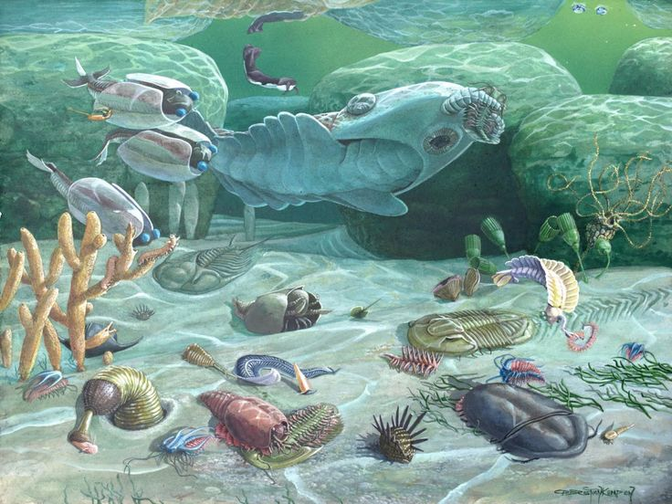
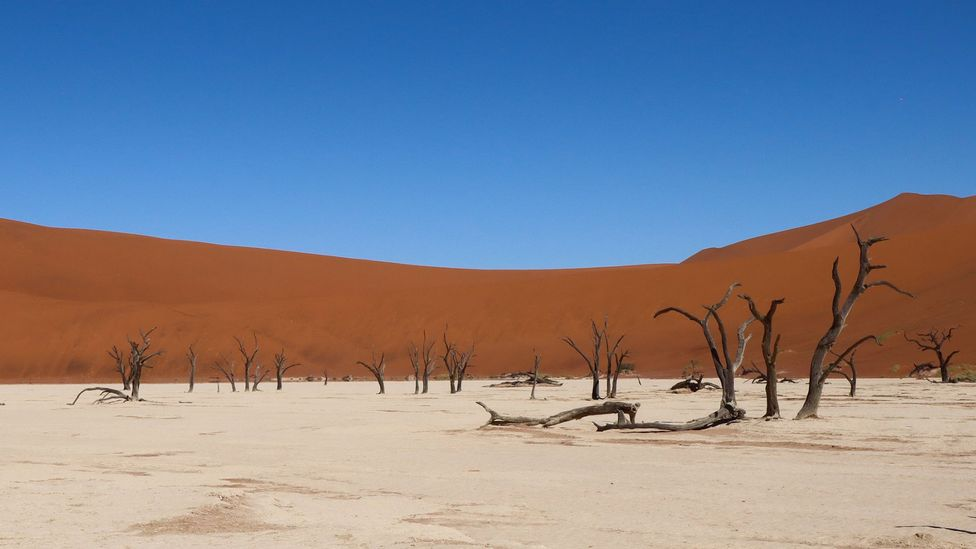
485 MYA
Ordovician
- Period: Ordovician (485–443 million years ago)
- Climate: Mostly warm, but cooling began toward the end
- Oceans: Shallow seas covered much of the continents
- Land: Mostly barren, with possible early plants near shorelines
- Life: Huge diversity of marine creatures like (early fish, corals, starfish)
- Key Change: Life expanded into more ecological niches
- Event: Ended with the Ordovician–Silurian extinction due to ice age and sea-level drop
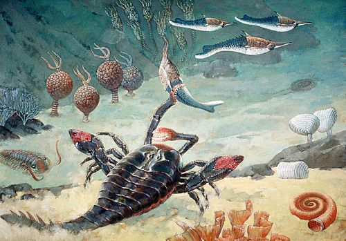
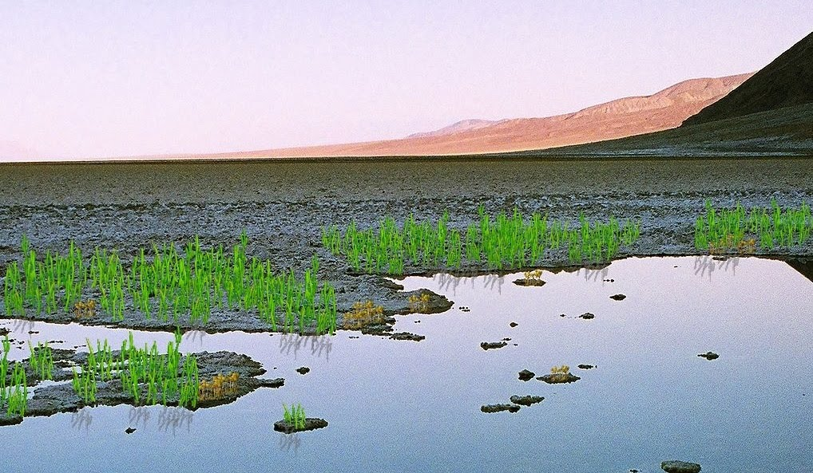
443 MYA
Silurian
- Period: Silurian (443–419 million years ago)
- Climate: Earth warmed again after a major extinction event
- Oceans: Rising sea levels created many shallow and warm seas
- Land: First simple vascular plants and fungi began spreading along coastlines
- Life: Marine life thrived, including coral reefs and fishes
- Key Change: First significant movement of life on land began
- Event: Recovery and diversification after the late Ordovician extinction
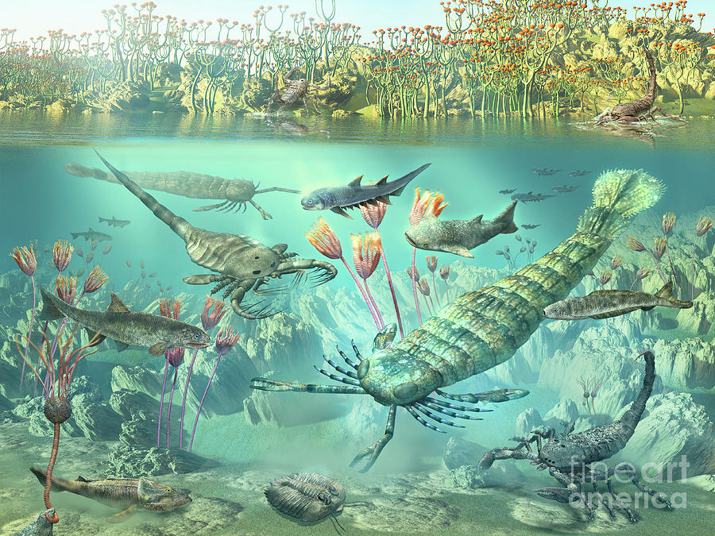
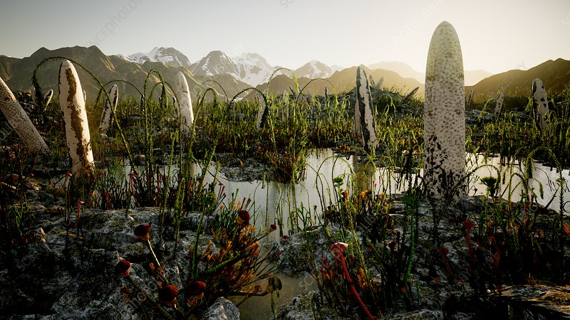
419 MYA
Devonian
- Period: Devonian (419–358 million years ago)
- Climate: Generally warm, with developing dry inland conditions
- Oceans: Marine ecosystems dominated by fish diversity
- Land: First forests appeared with early trees and plants spreading
- Life: The Age of Fishes, the first amphibians also appeared.
- Key Change: Vertebrate life began transitioning onto land
- Event: Late Devonian extinction events affected many of marine life
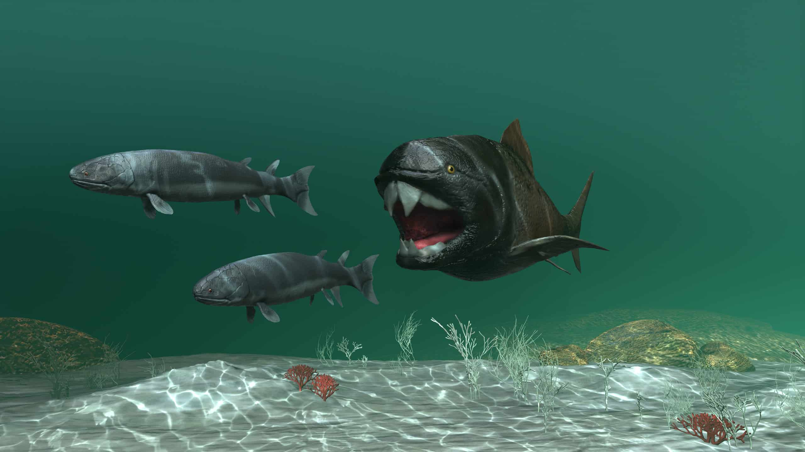
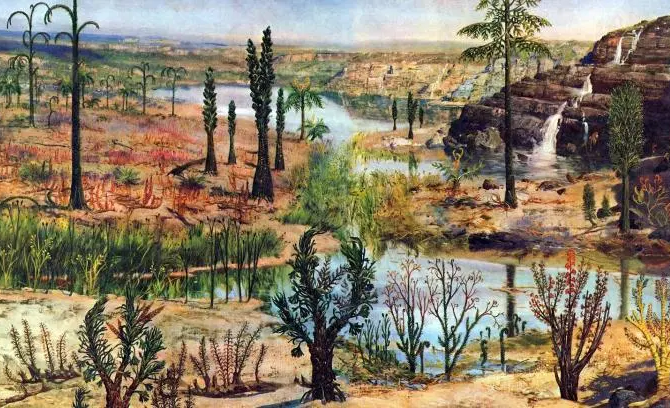
358 MYA
Carboniferous
- Period: Carboniferous (358–298 million years ago)
- Climate: Warm and humid with high oxygen levels
- Oceans: Expansion of shallow seas and swampy coastal environments
- Land: Vast swamp forests dominated the landscape
- Life: Giant insects, early reptiles, evolution of sharks and dense plant life thrived
- Key Change: Reptiles began evolving from amphibian ancestors
- Event: Formation of coal deposits from massive swamp forests
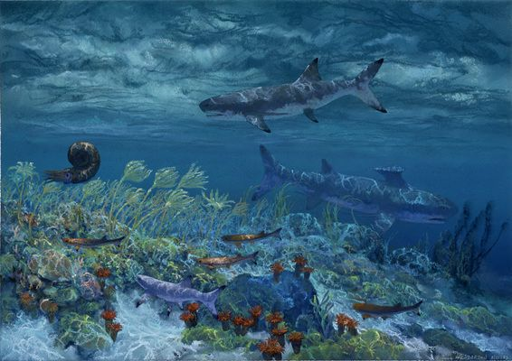
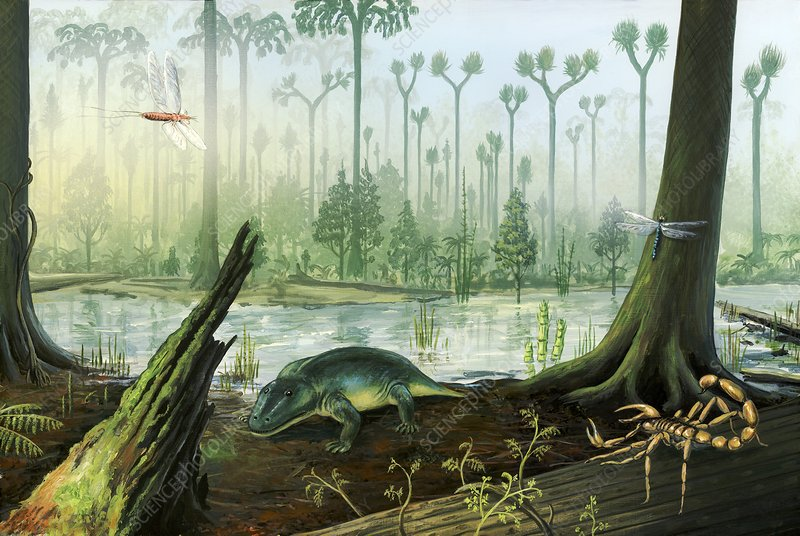
298 MYA
Permian
- Period: Permian (298–252 million years ago)
- Climate: Became increasingly dry and extreme as continents merged
- Oceans: Marine ecosystems reduced but still diverse early in the period
- Land: Pangaea formed, creating vast deserts and harsh environments
- Life: Reptiles and early mammal-like reptiles became dominant
- Key Change: Adaptation to dry land conditions became essential for survival
- Event: Ended with the "The Great Dying", the largest mass extinction in Earth’s history. 80% of marine life and 70% of terrestrial life vanished.
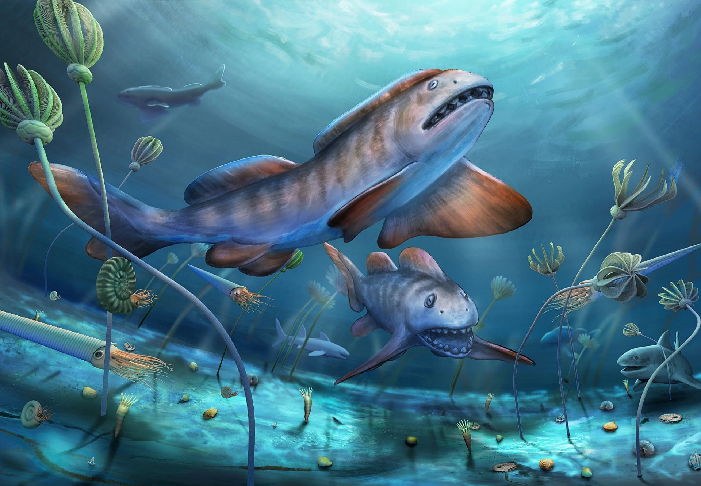
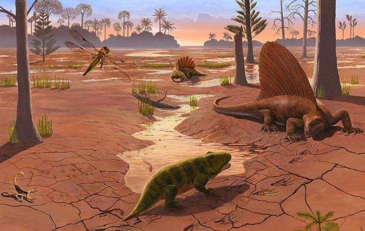
References
Content and imagery sourced from scientific publications, museum archives, and educational resources on the Paleozoic Era.
Robinson, R. A. (n.d.). Paleozoic era | description, climate, & facts | britannica. Paleozoic Era. https://www.britannica.com/science/Paleozoic-Era